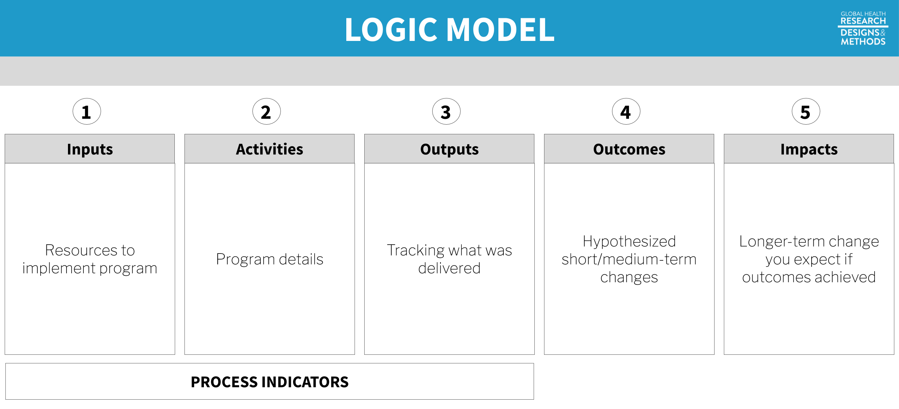
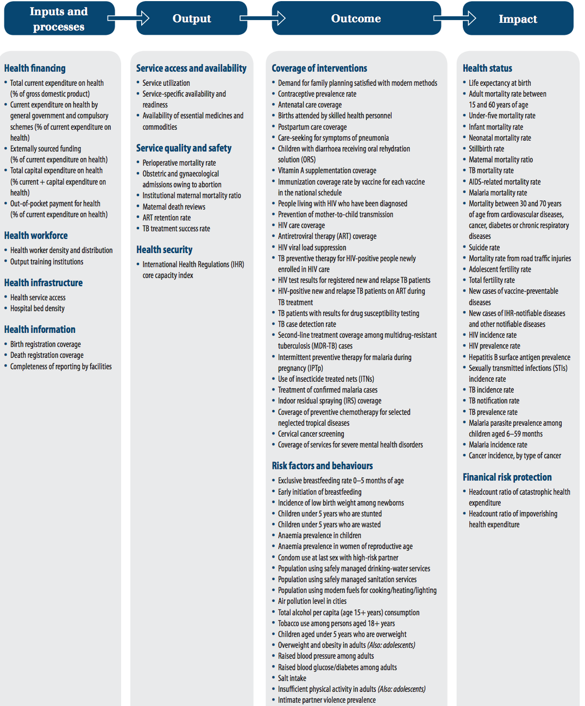
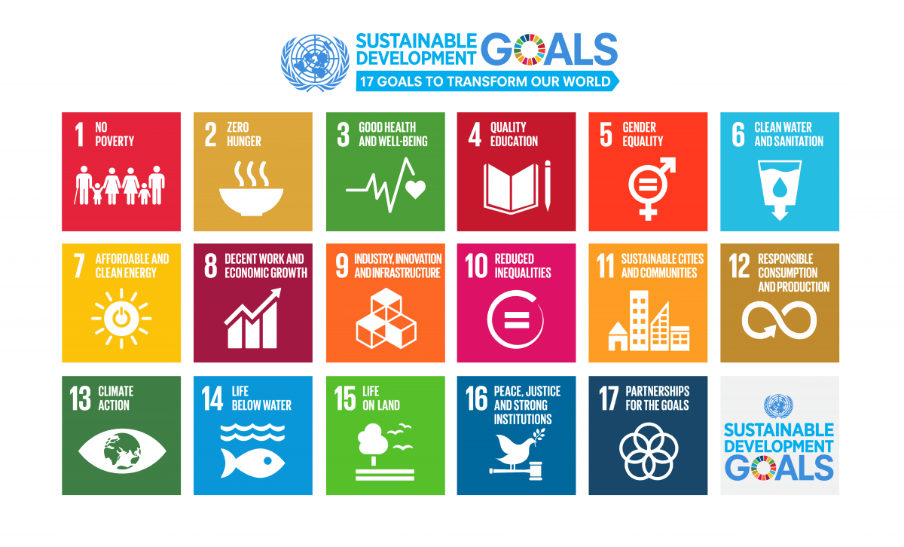
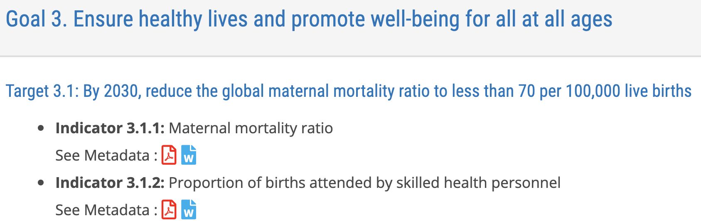
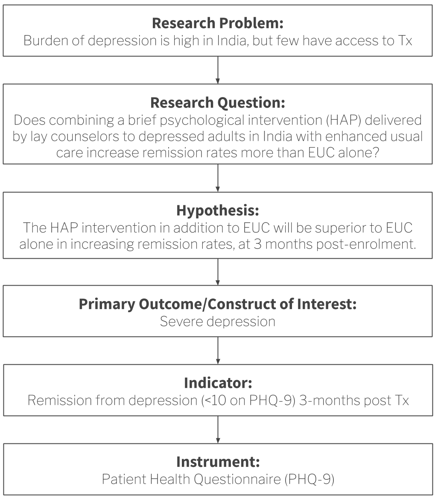

7 Outcomes and Indicators
This chapter describes key measurement concepts, such as how to identify, define, and quantify study constructs. We’ll start by reviewing an example from the global mental health literature and use a conceptual model to think through important targets of measurement. Then we’ll consider what makes a good indicator of study constructs and outcomes and discuss common types of indicators you’ll come across in global health.
7.1 Using Conceptual Models to Plan Study Measurement
Drawing a blank on conceptual models? Head back to Chapter 6 for a quick refresher on logic models. via GIPHY
A good conceptual model, such as a theory of change or a logic model, can be a bridge to good measurement. I’ll demonstrate this using a study by Patel et al. (2017) that reports on the results of a randomized controlled trial in India to test the efficacy of a lay counsellor-delivered, brief psychological treatment for severe depression called the Healthy Activity Program, or HAP. Please download the article here and give it a read.

Figure 7.1: Abstract from Patel et al. (2017) published in The Lancet.
7.1.1 PROCESS INDICATORS
Figure 7.2: Logic model. Process indicators in a logic model capture how well a program is implemented—the “M” (monitoring) in M&E. As researchers, we care about collecting good process and monitoring data to develop a better understanding why programs do or do not work. For example, program costs must be accurately tracked to estimate cost-effectiveness. Or it may be important to determine whether the intervention was delivered according to the plan.
Let’s start by using the article to create a logic model for the HAP intervention. All of the details we need are provided by the authors in the Method section. Before you continue with this chapter, see if you can identify the intervention inputs, activities, and outputs, otherwise known as process indicators.
Go ahead, I’ll wait for you. via GIPHY
Inputs
You’ll recall from the previous chapter that inputs are the resources needed to implement a program. The most basic input of all is money. The authors tell us that HAP delivery costs included “patient contact and counsellor training, supervision, and salary”, an average of $66 per person. Aside from funding for these human resources—including “an international expert in behavioural activation”, local specialists, and lay counselors—we’re told that HAP is a “manualised psychological treatment”, which means there is a curriculum.15 See here for a copy of the manual, and refer to Chowdhary et al. (2016) for details about development of the intervention.
Activities
The main HAP activities were psychotherapy for patients and supervision of lay counselors. HAP was designed to be delivered in an individual, face-to-face format (telephone when necessary) over 6 to 8 weekly sessions each lasting 30 to 40 minutes. Supervision was to consist of weekly peer-led group supervision and twice monthly individual supervision.
In a study like this, it’s important to measure if the intervention was delivered as intended. This is called treatment fidelity, and it’s a measure of how closely the actual implementation of a treatment or program reflects the intended design.
Patel et al. (2017) measured fidelity in several ways, including external ratings of a randomly selected 10% of all intervention sessions. An expert not involved in the program listened to recorded sessions and compared session content against the HAP manual. This is a key part of the measurement plan because the intervention trained regular people with no prior experience to deliver a psychological treatment. We learn in the Results section that treatment fidelity was high, but imagine it had been poor. How would you interpret data suggesting that the intervention did not convey any benefit?
Low treatment fidelity usually results in an attenuation (i.e., shrinking) of treatment effects, which is a threat to internal validity. If the study shows no effect but treatment fidelity is low, the null result may not be valid. Implementation failure rather than theory or program failure could be to blame. Low fidelity is also a threat to external validity because it is not possible to truly replicate the study.
Outputs
Treatment compliance is one of those terms like “subjects” that can make you cringe a bit. Research is voluntary, and participants have the right to decline a treatment offer or stop treatment at any point. We call this behavior “non-compliance”, which sounds to some like participants are misbehaving. Non-compliance can make your analysis and interpretation more complicated, but participants are not to blame. Look instead to the root causes in the research design, study procedures, or the intervention itself to find ways to limit non-compliance.
Outputs are counts. One important type of count in a trial like this is treatment compliance, a measure of the extent to which people were treated or not treated according to their study assignment. Sometimes people assigned to the treatment group do not take-up the treatment, or they complete only part of the planned intervention.
Noncompliance to randomization on the treatment side is called one-sided noncompliance. When members of the control group16 Non-compliance is not limited to designs with a treatment group and a control group. It also applies to studies comparing two active treatments. are also noncompliant with randomization, meaning they are treated despite being assigned to the no treatment condition, this is called two-sided noncompliance.
Patel et al. (2017) randomly assigned 495 eligible adults to the HAP plus enhanced usual care group (n=247) or the enhanced usual care condition alone group (n=248). No one in the control group (EUC-only) was treated with HAP, but 31% of the HAP group had an unplanned discharge and did not complete the treatment. Analysis strategies for one- and two-sided noncompliance are discussed in a later chapter.
7.1.2 OUTCOMES AND IMPACTS
The hypothesized outcome in Patel et al. (2017) was a reduction in severe depression:
The two primary outcomes were depression severity assessed by the modified Beck Depression Inventory version II (BDI-II) and remission from depression as defined by a PHQ-9 score of less than 10, both assessed 3 months after enrollment.
From the Introduction, we learn the following about the potential, long-term impact of achieving this outcome of depression remission:
Depression substantially impairs quality of life, social functioning, and workforce participation among people with the disease, their family members, and their communities, with an annual global cost attributable to depression estimated at US$1·15 trillion.
7.1.3 HAP LOGIC MODEL
Putting it all together, we have the following logic model of the HAP intervention. In the next few sections we’ll take a closer look at outcome definitions and measurement.

Figure 7.3: Logic model based on Patel et al. (2017).
7.1.4 OTHER CONCEPTUAL MODELS
 Figure 7.4: A visual representation of the Dupas (2011) conceptual framework from Chapter 6.
Figure 7.4: A visual representation of the Dupas (2011) conceptual framework from Chapter 6.
A logic model might not be the right choice for your study, but the point holds: any conceptual model will help you think more critically about measurement issues. Specifying a model is a great first step toward ensuring that you will collect all of the data you need to achieve your study aims.
7.2 Terminology
In the last chapter, I introduced outputs (things you count), outcomes (things you want to change), and impacts (hypothesized longer-term changes). Let’s review a few new key measurement terms defined in Table 7.1.
| Term | Definition | Example |
|---|---|---|
| Construct | A characteristic, behavior, or phenomenon to be assessed and studied. Often cannot be measured directly. | Depression |
| Outcome | In an impact evaluation, ‘constructs’ will be referred to as outcomes—the intended results of the program. Also referred to as an endpoint in a trial. | Decreased depression |
| Indicator | Observable measures of outcomes or other study constructs. | Depression severity score on a depression scale |
| Instrument | The tools used to measure indicators. Also referred to as a measure. | A depression scale, made up of questions/items about symptoms of depression |
| Variable | The numeric values of the indicators. | |
| Respondent | The person (or group) that we measure. |
7.2.1 CONSTRUCTS
At the top of the list are study constructs. Constructs are what you investigate. In the Patel et al. (2017) example, the key construct of interest was depression. Many constructs are hard to measure directly—think empowerment, corruption, democracy. Even constructs that seem straightforward, like mortality, can be hard to define and measure.
For instance, we care a lot about the causes of maternal mortality. But what counts as a maternal death? Clearly dying in childbirth counts, but what about a car accident during pregnancy? No? What about homicide during pregnancy? And what about deaths that occur shortly after delivery? Even 1 month after delivery? Before we can define what we mean by a maternal death, we have to get clear on the construct itself. For maternal mortality, this means thinking about biological mechanisms as well as social constructs like intimate partner violence.
7.2.2 OUTCOMES
Some scholars investigate the nature of constructs as their primary aim. For instance, my colleagues and I conducted a study in Kenya where we tried to understand what people meant by the word “depression” and how to best measure this construct (Green et al. 2018). The goal was to understand everything we could about this thing called depression.
Outside of the clinical trial/impact evaluation literature, outcomes are often known as dependent variables or response variables. Additional constructs of interest might be called “covariates”, “independent variables”, or “exposure variables”.
But most often, researchers are interested in the relationship between constructs. What predicts depression? What interventions reduce depression? Framed this way, depression is an outcome. In a theory of change or logic model, outcomes take on the language of change: increases and decreases. The hypothesized outcome of implementing the HAP intervention was a reduction in severe depression.
But the word “outcome” is also used more generally to represent the study endpoint. In a trial, your outcomes/endpoints are your markers of success. Death. Survival. Time to disease. Blood pressure. Tumor shrinkage. These are all endpoints you might seek to measure after offering some treatment or intervention.
One study cannot definitively answer every possible research question. There are tradeoffs in terms of the time, money, and resources, so investigators must prioritize among all possible outcomes.
Most studies are designed to provide the best evidence possible about one or two primary outcomes linked directly to the main study objective. Secondary outcomes may be registered, investigated, and reported as well, but these analyses may be more exploratory in nature if the study design is not ideal for measuring these additional outcomes. Patel et al. (2017) included the following secondary outcomes in addition to depression severity and remission from depression:
Secondary outcomes were disability on the WHO Disability Assessment Schedule II and total days unable to work in the previous month, behavioural activation on the five-item abbreviated Activation Scale based on the Behavioural Activation for Depression Scale-Short Form, suicidal thoughts or attempts in the past 3 months, intimate partner violence (not a prespecified hypothesis), and resource use and costs of illness estimated from the Client Service Receipt Inventory.
7.2.3 INDICATORS AND INSTRUMENTS
The language of qualitative studies is a bit different. These studies emphasize study constructs, but not indicators or measures. Quantification is not typically the goal.
Moving from general to specific, the next term is indicator. Every outcome needs to be defined and measured. For example, Patel et al. (2017) hypothesized that the HAP intervention would reduce severe depression (the outcome). But what indicates depression?
Patel et al. (2017) specified two indicators:
- a depression symptom severity score (a continuous measure of severity where higher scores suggest someone is experiencing more severe symptoms of depression); and
- depression remission (a binary/dichotomous indicator of the absence of depression based on a person’s depression score relative to a reference cutoff score; < 10 on the Patient Health Questionnaire-9).
Indicators are measured with instruments. Patel et al. (2017) used two instruments:
- the Beck Depression Inventory version II (BDI-II, pdf; Beck, Steer, and Brown 1996); and
- the Patient Health Questionnaire-9 (PHQ-9, pdf; Kroenke and Spitzer 2002).
Figure 7.5: Instruments used in Patel et al. (2017). Source: https://datacompass.lshtm.ac.uk/513/.
7.3 What Makes a Good Indicator?
When you select and define indicators of outcomes and other key variables, you are said to be operationalizing your constructs. This is a critical part of your planning. When you finish the study and present your findings, one of the first things colleagues will ask is, “How did you define [YOUR AWESOME OUTCOME]?” In other words, did you select a good indicator? Is your indicator DREAMY™:
| Defined | clearly specified |
| Relevant | related to the construct |
| Expedient | feasible to obtain |
| Accurate | valid measure of construct |
| Measurable | able to be quantified |
| customarY | recognized standard |
7.3.1 DEFINED
It’s important to clearly specify and define all study variables, especially the indicators of primary outcomes. This is a basic requirement that enables a reader to critically appraise the work, and it serves as a building block for future replication attempts.
Patel et al. (2017) preregistered and defined two indicators of depression severity and remission:
- Mean difference in total score measured at 3 months by the Beck’s Depression Inventory (BDI-II), a 21-item questionnaire assessment of depressive symptoms. Each item is scored on a Likert scale of 0 to 3. It measures depression severity based on symptom scores.
- Remission, defined as a score of <10 measured at 3 months by the Patient Health Questionnaire (PHQ-9), a nine-item questionnaire for the detection and diagnosis of depression based on DSM-IV criteria. It is scored on a scale of 0 to 3 based on frequency of symptoms.
7.3.2 RELEVANT
Indicators should be relevant to the construct of interest. In Patel et al. (2017), scores on the BDI-II and PHQ-9 are clearly measures of depression. An example of a nonrelevant indicator would be scores on the Beck Anxiety Inventory, a separate measure of anxiety. While anxiety and depression are often comorbid, anxiety is a distinct construct.
7.3.3 EXPEDIENT
It should be feasible to collect data on the indicator given a specific set of resource constraints. Asking participants to complete a 21-item questionnaire and a 9-item questionnaire (as in Patel et al. (2017)) does not represent a large burden on study staff or participants. However, collecting and analyzing biological samples (e.g., hair, saliva, or blood) might.
7.3.4 ACCURATE
Accurate is another word for “valid”. Indicators must be valid measures of study constructs. When deciding on indicators and instruments, Patel et al. (2017) had to ask themselves whether scores on the BDI-II and PHQ-9 measure a concept called depression among their target population. The authors cited their own previous work to support the decision to use these instruments (Patel et al. 2008).
7.3.5 MEASUREABLE
Indicators must be quantifiable. Psychological constructs like depression are often measured using scales like the BDI-II and the PHQ-9. Other constructs require more creativity. For instance, Olken (2005) measured corruption in Indonesia by digging core samples of newly built roads to estimate the amount of materials used in construction and then compared cost estimates against reported expenditures to calculate a measure of corruption (i.e., by determining the missing expenditures).
7.3.6 CUSTOMARY
Whenever possible, it’s smart to use standard indicators and follow existing definitions and calculation methods. One way to learn about standards and customs is to follow the current literature and locate articles that measure the same constructs. Familiarity with what is being published and the methods being used is a significant advantage in achieving publication of a research study.17 My general advice is to follow the approaches and use the instruments that have already been established in a research field. But sometimes the status quo stinks and you’ll want to conduct a study to overcome the limitations of the standard methods. Go for it.
For example, if you’re planning an impact evaluation of a microfinance program on poverty reduction and wish to publish the results in an economics journal, start by reviewing highly cited work by other economists to understand current best practices. How do these scholars define and measure outcomes like income, consumption, and wealth?
If studying population health, for instance, a good source of customary indicators is the World Health Organization’s Global Reference List of the 100 core health indicators (WHO 2015a):
Figure 7.6: WHO 100 core health indicators. Source: http://bit.ly/1NgGeLh.
Figure 7.7: Sustainable Development Goals. Source: http://bit.ly/2cuDpWN.
Another good source of customary indicators is the United Nations Sustainable Development Goals (SDG), which include 230 indicators to measure 169 targets for 17 goals. For instance, a search of the SDG indicator metadata repository reveals that Goal 3 is to ensure healthy lives, and Target 3.1 is to reduce the global maternal mortality ratio to less than 70 per 100,000 live births by 2030. The UN plans to measure progress against this target with two indicators:
Figure 7.8: SDG Goal 3 targets and indicators. Source: https://unstats.un.org/sdgs/metadata/.
7.4 Constructing Indicators
7.4.1 SIMPLE
Some indicators are based on a single measurement and require only a definition. For instance, a hemoglobin level of less than 7.0 g/dl is an indicator of severe anemia. If you were evaluating the impact of a new diet on severe anemia, you would need only to record the result of a blood test (instrument).
Returning to the SDG example, Indicator 3.1.2 is the proportion of births attended by skilled health personnel. To calculate this indicator, you need to know two things:
- the number of women aged 15-49 with a live birth attended by a skilled health personnel (doctors, nurses or midwives) during delivery; and
- the total number women aged 15-49 with a live birth in the same period.
ITN Access Indicator Snapshot. The DHS Program (2015). Source: https://tinyurl.com/y5ydg6qm.
You also only need to know two things from a Malaria Indicator Survey to calculate the indicator “proportion of households with at least one insecticide treated net”:
- the number of households surveyed with at least one ITN; and
- the total number of households surveyed.
But getting a good answer to (1) takes some work. To qualify as an ITN, the net must have been factory-treated or soaked with insecticide within the past 12 months. To determine whether a household owns an ITN, survey administrators ask the following sequence of questions.
Figure 7.9: Survey flow to determine whether a household has at least one insecticide treated net.
The end result is a binary indicator (yes/no) of whether the household has a bednet that has been dipped in the past 12 months or is factory-treated. Sure, it’s possible to ask this in one question—“Does your household have any factory-treated mosquito nets or nets that have been dipped in a liquid to kill or repel mosquitoes in the past 12 months?” But this is a long and complicated question, and it’s more effective to break it up into smaller parts.
7.4.2 COMPOSITE
Latent (unobservable) constructs like empowerment, quality of life, and depression, and some manifest (observable) constructs like wealth, are often measured with multiple items on a survey or questionnaire that are combined into indexes or scales.
The terms index and scale are often used interchangeably, but they are not synonymous. While they share in common the fact that multiple items or observations go into their construction, making them composite measures or composite indicators, the method for and purpose of combining these items or observations are distinct.
In an index, indicators “cause” the concept that is being measured. For example, a household’s wealth is determined by the assets it owns (e.g., livestock, floor quality). Conversely, in a scale, the construct “causes” the indicators. If you are depressed, you will exhibit certain symptoms.
Figure 7.10: Scale vs index.
Indexes
Indexes combine items into an overall composite, often without concern for how the individual items relate to each other. For instance, the Dow Jones Industrial Average is a stock-market index that represents a scaled average of stock prices of 30 major U.S. companies such as Walt Disney and McDonald’s. The Dow Jones is a popular indicator of market strength and is constantly monitored during trading hours. Every index has its quirks, and the Dow Jones is no exception. Companies with larger share prices have more influence on the index.
An alternative to the wealth index is a new measure called the Equity Tool. Metrics for Management (2015). Source: https://tinyurl.com/y2gqtvqn.
An index popular in the global health field is the DHS wealth index. As a predictor of many health behaviors and outcomes, economic status is a covariate in high demand. Failing to measure economic status in a household survey would be as grave as failing to note a respondent’s gender or age, but measuring economic status is not nearly as easy.
In an ideal data world, every survey would include accurate information on household income and consumption as measures of household wealth. Income is volatile, however, and consumption is very hard to measure over short periods. Thus, in the late 1990s, researchers proposed creating an index of household assets as a measure of a household’s economic status (Rutstein and Johnson 2004).
Data for the wealth index come from DHS surveys conducted in a particular country. Asset variables include individual and household assets (e.g., phone, television, car), land ownership, and dwelling characteristics, such as water and sanitation facilities, housing materials (i.e., wall, floor, roof), persons sleeping per room, and cooking facilities.
Principal component analysis is a data reduction technique in which indicators are standardized (i.e., transformed into z-scores) so that they each have a mean of 0 and a variance of 1. A principal component (i.e., an eigenvector) is a linear combination of the original indicators; thus, every indicator (e.g., yes/no response to owning a phone) has a loading factor that represents the correlation between the individual indicator and the principal component. The first principal component always explains the most variance. In constructing the wealth index, the first component measures the concept called “wealth,” so the factor loadings on the first principal component are used to create a score for each household.
A key decision in creating indexes like the wealth index is whether to weight the individual components. Should owning a car be given the same weight as owning a phone in the construction of wealth? Most researchers would probably say no, so the next question is how to assign differential weights to the components. Filmer and Pritchett (2001) first proposed assigning weights via principal component analysis, or PCA.
Once the weights are determined, a household gets an overall score that is the sum of the weights for having (or not having) each asset. It’s then possible to divide the distribution of household wealth index scores into quintiles. Each household falls into 1 of 5 wealth quintiles reflecting their economic status (relative to the sample). Hereby, the relationship between health outcomes and wealth can be examined.
Figure 7.11: Example wealth index construction from 2014 Bangladesh DHS.
Scales
Composite scales are very common in health and social science research. This is because many constructs like depression, empowerment, and quality of life do not (yet) have reliable biomarkers or objective measures. Constructs like depression need to be defined and measured indirectly.
In some domains like psychology and psychiatry, you could, at least in theory, have a clinician diagnose a disorder like depression based on some agreed upon criteria. According to the Diagnostic and Statistical Manual for Mental Disorders, currently the DSM-V, there are five criteria for major depressive disorder. If someone meets criteria A–E, they are diagnosed with major depressive disorder (MDD).

Figure 7.12: DSM-V criteria for major depressive disorder.
A diagnosis by a trained mental health professional like a psychiatrist is considered the gold standard measure of depression. Gold standards are in short supply in many places, however, and more feasible methods of measuring this latent construct called depression are needed. A reasonable alternative is to develop a set of questions—a scale—that measure symptom severity. Presumably, if a person scores high enough on this scale, he or she would be considered “depressed”.
One example of a depression scale is the Beck Depression Inventory used by Patel et al. (2017) to measure depression severity. The BDI-II consists of 21 groups of statements.18 Patel et al. (2017) tell us that they excluded the item about sex for cultural reasons, so they used a modified BDI-II with 20 of the 21 questions.

Figure 7.13: Example scale.
CAUTION: Just because you find or create a scale like the BDI-II, it does not mean that the scale actually measures your construct of interest with your population of interest. We’ll return to this important topic in Chapter 14. via GIPHY
Each item is a manifest variable—something measured directly by asking the question. The latent variable depression is measured indirectly by summing the responses to all 21 manifest variables to create the BDI-II scale score.
7.5 The Takeaway
When you are planning a new study, you should be able to draw a logical flow from your research question to the measurement of primary study outcomes/constructs. Figure 7.14 demonstrates this idea using Patel et al. (2017) as an example.
Figure 7.14: From research question to study instruments
So ask yourself:
- Given my research question, what is the key construct of interest? What other constructs need to be measured at the same time to fully understand the key construct? Drawing a conceptual model can help you identify measurement issues.
- What are the indicators for these constructs? In other words, how can these constructs be quantified?
- Which measurement instrument will enumerate these quantities? What type of data will this instrument yield? (we’ll dig into this more in Chapter 14)
Additional Resources on Indicators
| Topic | Resource |
|---|---|
| Malaria | Roll Back Malaria (2013). Household Survey Indicators for Malaria. |
| Measure Evaluation (2016). Monitoring and Evaluation of Malaria Programs. | |
| HIV/AIDS | WHO (2015). Consolidated Strategic Information Guidelines for HIV in the Health Sector. |
| TB | WHO (2015). A Guide to Monitoring and Evaluation for Collaborative TB/HIV Activities: 2015 Revision. |
| Family Planning | FP2020 (2015). Measurement Annex. |
Page built: 2020-07-11